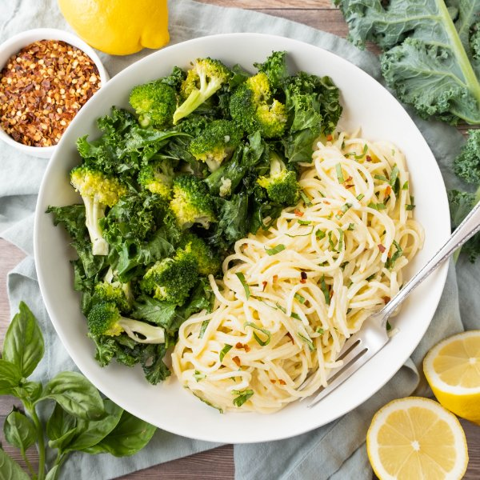

Spaghetti al Limone (Lemon Pasta) with Basil & Garlic-Roasted Veggies

Nutrition (per serving)
600.7 kcalCalories
19.1 gProtein
66.1 gCarbs
30.2 gFat
Full nutrition table
| Calories | 600.7 kcal |
| Total fat | 30.2 g |
| Saturated fat | 11.4 g |
| Trans fat | 0.5 g |
| Cholesterol | 50.4 mg |
| Sodium | 63.4 mg |
| Carbohydrates | 66.1 g |
| Fiber | 5.6 g |
| Sugars | 5.1 g |
| Protein | 19.1 g |
| Potassium | 686.2 mg |
| Calcium | 148.6 mg |
| Iron | 4.2 mg |
| Vitamin A | 1085.8 IU |
| Vitamin C | 131 mg |
| Vitamin D | 10.7 IU |
Cookware
Ingredients
- 2 crownsbroccoli
- 1 small pkgfresh basil
- 4 clovesgarlic
- 4 fl ozheavy whipping cream
- 1 bunchkale
- 1lemon
- 2 ozParmesan cheese
- 10 ozspaghetti pasta
- black pepper
- crushed red pepper
- extra virgin olive oil
- salt
Steps
- Preheat oven to 400°F.
- Fill a large pot halfway with water (from the tap), cover, and bring to a boil. Uncover, add salt and pasta, and stir for a few seconds. Cook until desired firmness, 8-10 minutes. (Reserve ½-cup cooking water before draining and set aside.)1 tsp salt
10 oz spaghetti pasta - Meanwhile, wash and dry the fresh produce.2 crowns broccoli
1 bunch kale
1 lemon
1 small pkg fresh basil - Peel and mince garlic. Place in a medium bowl along with oil, salt, and pepper; stir to combine the garlic oil.4 cloves garlic
2 tbsp extra virgin olive oil
½ tsp salt
¼ tsp black pepper - Separate broccoli into bite-sized florets and cut stems into smaller pieces. Transfer to a large baking sheet pan, drizzle with half of the garlic oil (reserving the rest for the kale), toss to coat, and spread out in an even layer.
- Place baking sheet in the oven (it doesn't have to be fully heated) and roast broccoli while you prepare the kale.
- Fold kale leaves in half lengthwise and slice off the stems. Chop or tear leaves into bite-sized pieces, add to the bowl with reserved garlic oil, and toss to coat.
- Remove baking sheet from the oven, add seasoned kale, and toss to combine with the broccoli. Return baking sheet to the oven and continue to roast until veggies are tender-crisp, 8-10 minutes more. Remove from oven.
- While the veggies are roasting, zest and juice lemon into a small bowl. Add cream, oil, salt, and crushed red pepper; whisk to combine the lemon cream.4 fl oz (½ cup) heavy whipping cream
2 tbsp extra virgin olive oil
½ tsp salt
¼ tsp crushed red pepper - Finely grate Parmesan, add to the bowl with the lemon cream, and stir to combine. Set aside.2 oz Parmesan cheese
- Pick basil leaves off the stems, roll up crosswise, and thinly slice into ribbons. Set aside.
- Return drained pasta to the pot and place over medium heat. Stir in the Parmesan-lemon cream and reserved pasta water; cook, stirring gently, until cheese has melted and sauce has thickened slightly, 2-3 minutes. Remove from heat.
- Stir basil into the pasta.
- To serve, divide pasta and veggies between plates or bowls. Top pasta with additional crushed red pepper and enjoy!⅛ tsp crushed red pepper